从一次 LLM 调用到完整 Harness，Agent 到底经历了什么？
来源：微信公众号 归档日期：2026-09-10 抓取状态：成功 原文字符：16062｜配图：17 张
摘要速览
- Agent 系统像一套小型操作系统（管子 Agent、记忆文件、工具、权限、隔离、恢复、观测），但每个部件都是被一个问题逼出来的
- 复杂性演进链：LLM → Q&A Bot（上下文装配）→ ReAct（工具循环）→ 记忆 → 权限/沙箱 → 子 Agent 并行
- 核心原则：模型看见的一切，都是运行时系统为它构造出来的——运行时决定历史、指令优先级与裁剪，直接决定 Agent 行为
核心内容
- LLM 阶段：
answer = LLM(question)，模型参数里有世界知识，但没有跨轮记忆，也不知道自己输出是否被执行 - Q&A Bot：增加上下文装配层（system prompt + 近期历史 + 当前输入）；Working Memory 不是长期存储，而是"这一轮真正提交给模型的全部上下文"
- ReAct：Agent 必须根据行动结果继续决策——推理（Reason）与行动（Act）交替循环，工具调用结果回流进上下文
- 每越过一个边界就多一个部件：上下文装不下历史 → 记忆；循环产生真实副作用 → 权限与沙箱；一个循环不够并行 → 子 Agent
- 当代形态：管理子 Agent 进程、维护长期记忆文件、工具驱动接触外部世界、处理恢复与观测——近似小型操作系统
可执行启发
- 排查 Agent 行为异常时，优先检查运行时给它"装配了什么上下文"，而不是怀疑模型能力
- 设计 Harness 时按"每越一个边界加一个部件"的思路控制复杂度，不要预先堆砌全部分层
归属：[[02-输入/按主题/AI与效率/_index|AI与效率]]
我的想法
（待补充）
原文沉淀
目录
- 从一次模型调用到 Agent
- LLM
- Q&A Bot
- ReAct
- Tool Calling
- Memory
- 当能力变多，Agent 外面出现了 Harness
- Pi：先把最小 Harness 看清楚
- Resource Loader：在运行前装配资源
- OpenCode：事件驱动的服务
- Agent Profile：同一个循环装载不同身份
- Codex：安全执行和 Thread 生命周期
- Thread Manager：把协议请求接到运行实例
- Hermes：自进化
- Persistent Runtime：任务可以由时间而非用户触发
- 总结

作者：ivanxxie、davoszhang
今天的 Agent 系统看起来很像一套小型操作系统：它们管理子 Agent 进程，维护长期记忆文件，通过工具驱动接触外部世界，还要处理权限、隔离、恢复和观测。可它们的起点并不宏大。最初，开发者手里只有一个把输入映射为输出的语言模型。
复杂性并不是一次设计出来的。每当模型试图越过一次调用的边界，系统就必须在模型外面增加一个新部件：模型不知道此前聊了什么，于是出现上下文；模型无法改变世界，于是出现工具；一次工具调用解决不了任务，于是出现循环；上下文装不下历史，于是出现记忆；循环开始产生真实副作用，于是出现权限与沙箱；一个循环不够并行，于是出现子 Agent...
从一次模型调用到 Agent
LLM
最朴素的大语言模型接口可以被看成一个函数：输入一段 token，输出另一段 token。它可以在参数中编码世界知识，却不会天然记住某个用户上一轮说过什么，也不知道自己刚刚输出的命令是否被执行。
2020 年，GPT-3 展示了大规模语言模型仅通过文本提示完成多种任务的能力；2022 年底，GPT-3.5 成为 ChatGPT 背后的模型；2023 年 2 月，Meta 发布 LLaMA，推动开放权重模型进入主流研究与本地部署。GPT、LLaMA 以及后来出现的 Claude、Gemini、Qwen 等模型虽然能力不同，但在应用看来仍然共享同一个基本形态：接收上下文，predict next token。
answer = LLM(question)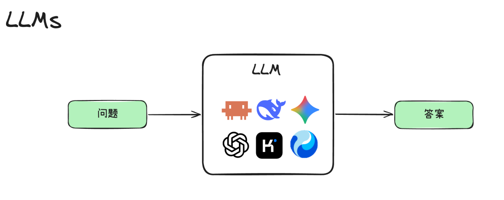
最初的系统只有一次前向调用。模型负责生成文本，应用只负责把问题送进去、把答案显示出来。模型参数里的知识来自训练；一次对话中的名字、偏好和任务状态，则必须由应用在每次调用时重新提交。模型本身并没有一个不断增长的用户档案。
Q&A Bot
Q&A Bot 的第一项工程进步，不是换了一个更聪明的模型，而是在模型前面增加一个上下文装配层。它把系统指令、用户当前输入和对话历史拼成一次请求。
在 GPT-3 时代，许多应用仍然把模型包装成单轮问答接口；2022 年 11 月，ChatGPT 把多轮对话带给大众，开发者开始普遍维护 System Prompt、User Prompt 和 Chat History。模型没有突然获得跨轮记忆，是聊天应用在每次请求前重新装配了历史。
working_context = [
system_prompt,
recent_chat_history,
user_prompt
]
answer = LLM(working_context)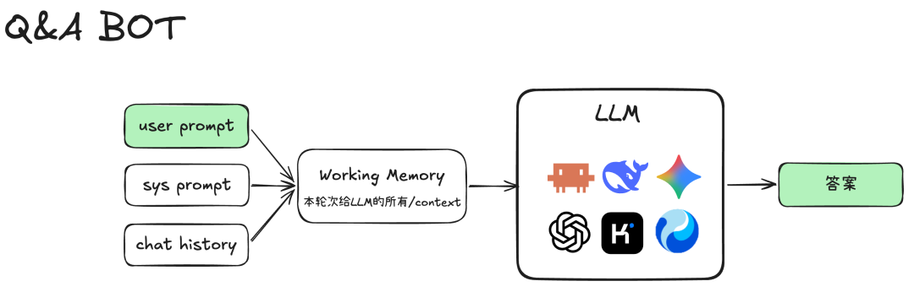
Working Memory 不是长期存储，而是这一轮真正提交给模型的全部上下文。
这一步看似只是字符串的拼接，却奠定了后面所有 Harness 的核心原则：模型看见的一切，都是运行时系统为它构造出来的。运行时选择哪些历史进入上下文、哪些指令拥有更高优先级、哪些内容必须被裁剪，都会改变 Agent 的行为。
ReAct
Bot 只需要回答一次，但 Agent 必须根据行动结果继续决策。2022 年提出的 ReAct 执行架构把推理轨迹与动作交错起来：模型形成下一步意图，执行外部动作，接收 Observation，再把观察送回下一轮推理。
ReAct 论文于 2022 年 10 月公开，并在 ICLR 2023 发表。它把此前分别讨论的 Chain-of-Thought 与外部行动连接成 Thought → Action → Observation 循环。2023 年大量早期 Agent 项目沿用了这一模式，Agent 也由“一种提示词技巧”逐渐变成了一个需要程序持续驱动的执行循环。
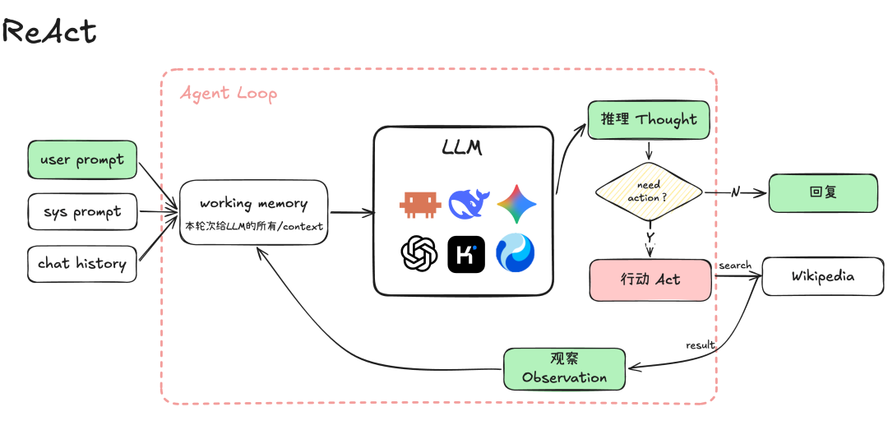
Agent 真正的分水岭不是“会思考”，而是建立了 模型 → 动作 → 环境 → 观察 → 模型 的闭环。
while not finished:
response = model(context)
if response.has_action:
observation = environment.execute(response.action)
context.append(response.action, observation)
else:
return response.answer这个 while 循环就是最早的 Agent Runtime。模型仍然只生成 token，真正负责“继续运行”的是模型外面的程序。它必须解析模型输出、判断是否结束、调用环境并把结果重新写入上下文。
今天许多模型把内部推理隐藏起来，但这不改变系统结构，运行时仍然需要识别模型给出的动作、执行动作，并把环境反馈送回模型。
Tool Calling
早期 Agent 常让模型输出类似 Search[Wikipedia] 的文本，再由程序用正则表达式解析。这种方式很灵活，也很脆弱，格式可能漂移，参数可能缺失，模型还可能把解释文字混进命令。
2022 年的 ReAct 主要依赖约定格式表达动作；2023 年 6 月，OpenAI 发布 Function Calling，工具名和参数开始成为模型 API 的结构化输出；2024 年 11 月，Anthropic 发布 MCP，进一步尝试标准化 Agent 与外部数据源、工具服务之间的连接。
结构化 Tool Calling 改变了这件事。工具通过 schema 注册，模型输出带有工具名、调用 ID 和参数的结构化对象；运行时验证参数、选择实现、执行调用，再把结果以 Tool Result Message 的身份放回上下文。2023 年 OpenAI 的 Function Calling 是这一机制走向主流 API 的重要节点。
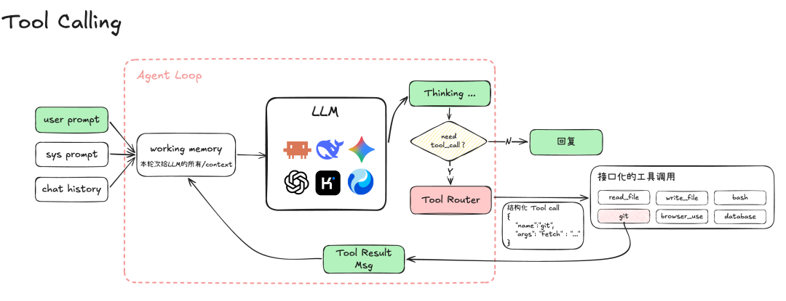
Tool Router 把“模型想做什么”翻译为确定的程序调用；Tool Result Message 再成为下一轮模型输入的一部分。
Tool Schema：描述工具名称、用途、参数类型与约束，让模型知道动作空间。
Tool Router：根据名称找到实现，验证参数，并把一次模型输出变成一次程序调用。
Tool Result：携带调用 ID、状态与返回值，保证观察可以准确对应到原始动作。
从这一刻开始，Agent 不再只是“生成看起来像命令的文本”，而是获得了一套可验证、可路由、可审计的动作协议。后来的文件工具、终端、浏览器、数据库、MCP，本质上都在扩展这个协议。
Memory
Agent Loop 解决了“如何连续行动”，却没有解决“如何跨会话积累”。完整历史会越来越长，而上下文窗口始终有限。系统不得不把过去拆成两个空间：一个是本轮模型可见的 Working Memory，另一个是模型外部可持久化、可检索的 Long-term Memory。
2020 年的 RAG 已经清楚地区分了模型参数中的知识与外部可检索知识；2023 年的 MemGPT 又借用操作系统的分层存储思想，在有限上下文与外部存储之间调度信息。此后，记忆从“检索几段文档”逐渐扩展到摘要、用户偏好、会话归档、技能文件和后台知识整理。
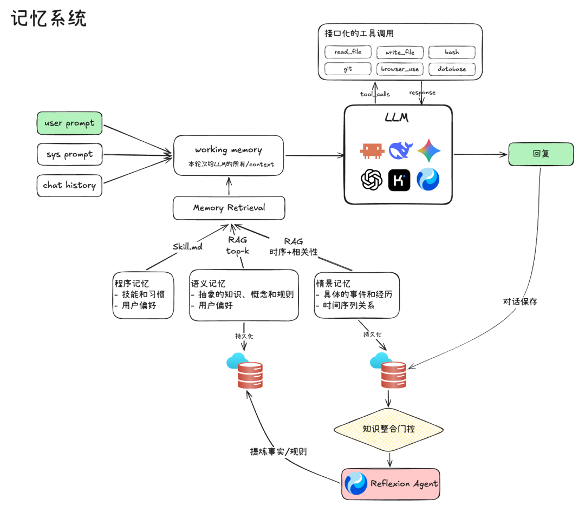
这是一张逻辑化能力图。不同 Harness 会采用文件、数据库、全文检索、向量检索或摘要等不同组合，而不是都实现完全相同的模块。
程序记忆（Procedural）：技能、习惯、操作流程和用户约定，典型载体是规则文件或 SKILL.md。
语义记忆（Semantic）：稳定事实、概念、偏好与项目知识，常通过摘要、全文索引或向量检索进入上下文。
情景记忆（Episodic）：某次任务发生了什么、采取了哪些动作、结果如何，通常来自会话日志与事件轨迹。
这里真正困难的不是存储，而是写入与读取策略：什么值得保存？何时合并重复事实？怎样处理互相冲突的记忆？检索多少条才不会挤压当前任务？错误记忆如何被纠正？因此，记忆系统很快又会长出提炼、整合、门控与反思流程。
当能力变多，Agent 外面出现了 Harness
到这里，我们已经拥有上下文、循环、工具和记忆。但只要系统开始承担真实工作，一批新的工程问题就会同时出现。
2023 年的许多 Agent 原型仍把 Prompt、Loop 和 Tools 写在一个应用里；2024 年，MCP 开始统一外部连接协议；到 2025 年，Claude Code 和开源的 Codex CLI 把终端 Agent 推向真实软件工程场景。随着任务变长、副作用变强、客户端变多，Agent Loop 外围的会话、权限、沙箱、事件和扩展机制逐渐凝结成独立的 Harness 层。
会话能否恢复：程序崩溃或用户退出之后，循环必须从一致的状态重新开始。
副作用是否安全：命令、写文件、网络访问不能只依赖模型“自觉”。
上下文如何压缩：长任务需要保留关键事实，同时释放上下文窗口。
客户端如何连接：TUI、IDE、桌面端、Web 与 SDK 需要观察同一个运行状态。
扩展如何装配：工具、MCP、Skills、Hooks 和配置需要确定的发现与加载机制。
任务如何并行：子 Agent 要拥有隔离的上下文、权限、历史与生命周期。
于是 Agent Loop 不再直接面对所有东西。它被包进一个更大的运行时，由这个运行时负责装配资源、管理会话、约束工具、持久化事件、暴露 API，并在多个 Agent 之间调度任务。这一层就是本文所说的 Agent Harness。
Agent 决定下一步做什么；Harness 决定这一步在什么上下文、权限、生命周期与持久化规则下发生。
下面的四个项目共享 Agent Loop、Tool Calling 和 Context Assembly 这些基本能力，却选择了不同的演化方向。我将把它们依次展开，可以看到 Harness 的设计空间。
Pi：先把最小 Harness 看清楚
同一个模型，只是换了一套 Harness，结果能差多少？测评机构 Composio 把 DeepSeek V4 Flash 分别放进 Pi Agent、Prime Agent、Deep Agents 和 Hermes Agent，跑了同一批 30 个 Agentic Tasks。Pi 的通过率是 66.7%，中位任务成本只有 0.012 美元。在这组测试里，它完成得最多，也花得最少。
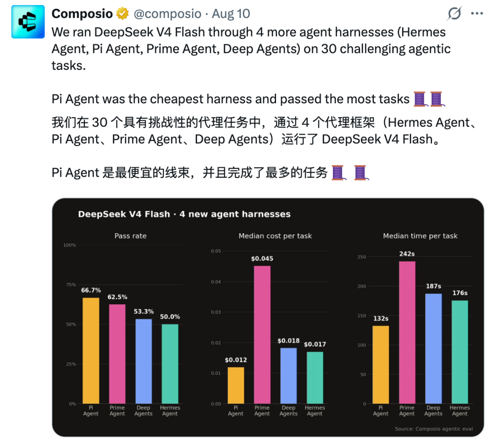
模型没有换，Harness 一换，模型能看到的上下文、走过的工具路径、循环的轮数和停止条件都会跟着变。
Databricks 的内部基准又把这个问题放进更接近生产环境的坐标系。他们从工程师真实 PR 构造任务，在覆盖 Python、Go、TypeScript、Scala 等语言的数百万行代码库上，比较单任务平均成本和整体通过率。图里的红色虚线是 Pareto 前沿，Pi 占据多段。Opus 4.8 搭配 Pi 的 xhigh 设置接近 90%，GLM 5.2 搭配 Pi 也进入最高能力梯队。更有意思的是，部分同模型、同推理强度换到 Pi 后，质量基本不变，单任务成本却能相差两倍以上。Databricks 追踪发现，Pi 每轮送入的上下文约少三倍，工作集更紧，也用更少轮次完成任务。
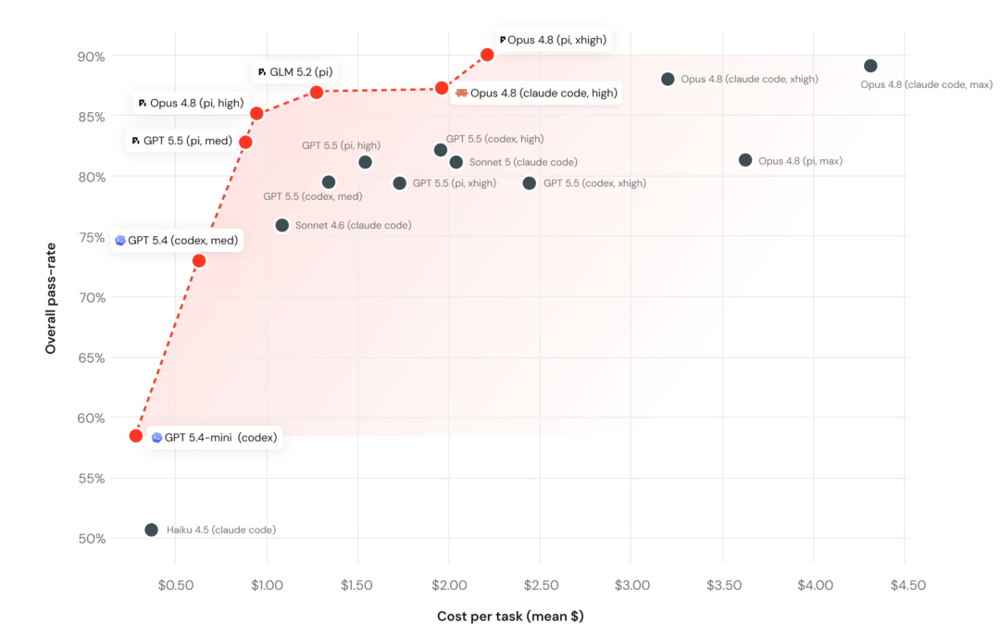
Pi 为什么能一边压低成本，一边把任务做对？Databricks 的运行轨迹给出的证明，是它尽量不让模型反复阅读无关内容。Pi 默认只暴露 read、write、edit、bash 四个工具，Resource Loader 显式装配当前会话启用的指令、Skills 和 Prompt Templates，Session Manager 再用活动分支和 Compaction 把完整会话投影成更紧的 Working Memory。这样一来，每轮请求携带的上下文更少，历史噪声和工具描述也更少，模型便能用更少 token、更少循环抵达结果。极简在这里不只是一种代码审美，它直接变成了任务成本和执行效率。
当然，小也有代价。Pi 当前不内置限制文件系统、进程、网络或凭证访问的权限系统，默认继承启动它的用户权限。要把它放进高风险环境，还得用容器或外部沙箱补上边界。Pi 让我们第一次看到从 Agent Loop 到极简 Harness 的跨越，它也是很多开源 Harness 框架魔改的起点。
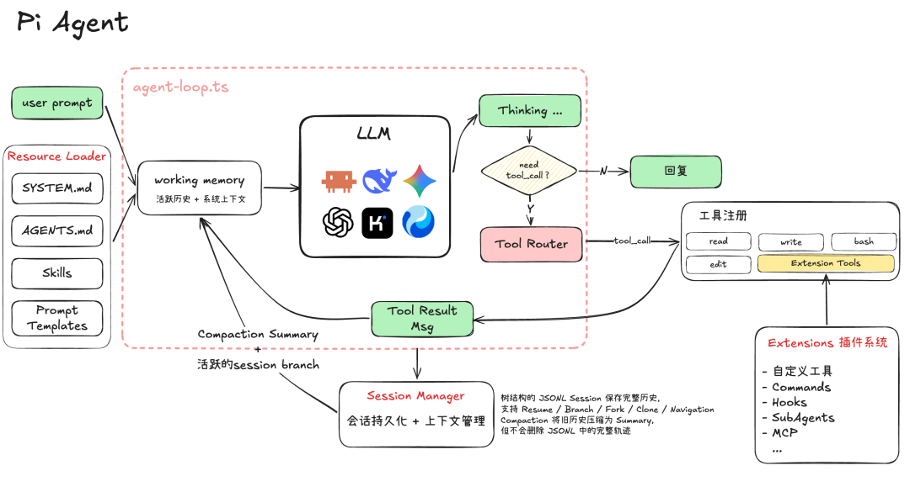
Resource Loader：在运行前装配资源
SYSTEM.md、AGENTS.md、Skills 与 Prompt Templates 并不是由模型自己去磁盘里“感知”的。Resource Loader 负责发现、解析并装配这些资源，再形成当前 Session 可使用的系统上下文。资源加载因此成为一种显式的启动过程。
OpenCode：事件驱动的服务
在 OpenCode 里，用户看到的一段回复，在存储层并不是一整块文本。一次 Assistant Message 下面可以同时挂着 Reasoning、Text、Tool、Step Start、Step Finish、Patch 和 Compaction 等 Part 组成的轨迹数据。模型想了什么、工具何时开始、补丁改了哪些文件、上下文何时被压缩，都有各自的结构和生命周期。
为什么要把一轮回答拆得这么碎？OpenCode 保存的对象是 Agent 运行过的全过程。只要过程可以被结构化记录，退出界面便不等于丢失现场，恢复 Session 也不再依赖重放终端字符。
这套运行从 Agent Profile 开始。源码中的 Agent.Info 不只包含 Prompt，还把模型、Mode、Permission、步数与生成参数放进同一个配置对象。Build 和 Plan 是主 Agent，General 和 Explore 是子 Agent，Compaction、Title、Summary 则是用户看不见的后台 Agent。同一个 Agent Loop 因而可以装载不同身份，每个身份拥有不同的工具边界与职责。
Agent Profile 决定此刻是谁在工作，Session Events 记录它做过什么，Compaction 决定哪些过去还要继续被模型看见。
Profile 决定行为，Session Events 负责留下事实。Message 与 Part 的更新会驱动 Projector，把 Session、Message、Part 分别投影进 SQLite。长会话接近上下文上限时，隐藏的 Compaction Agent 汇总较早的历史，并在 token 预算内保留近期 turns；旧工具输出还可以被裁剪，压缩摘要与近期消息再组成下一轮 Working Memory。OpenCode 的记忆管理更接近一条可重建的上下文管线，而不是额外外挂一个向量知识库。
在 2025 年前后的 Coding Agent 浪潮里，TUI、Web、桌面端和 SDK 开始共享同一套运行时。OpenCode 的多客户端并非最关键的创新，它们是结构化状态带来的结果。不同界面只需要提交请求并消费事件流，Agent 的身份、历史与执行进度仍由服务端 Session 统一管理。
这套设计也带来代价。一次看似简单的回复，现在需要维护 Agent 配置合并、权限组合、事件顺序、数据库投影和压缩边界；Compaction、Title、Summary 还会引入额外的模型调用。OpenCode 用更复杂的状态工程，换来 Session 可恢复、行为可审计、子 Agent 可隔离，以及同一运行时被多种界面消费的能力。
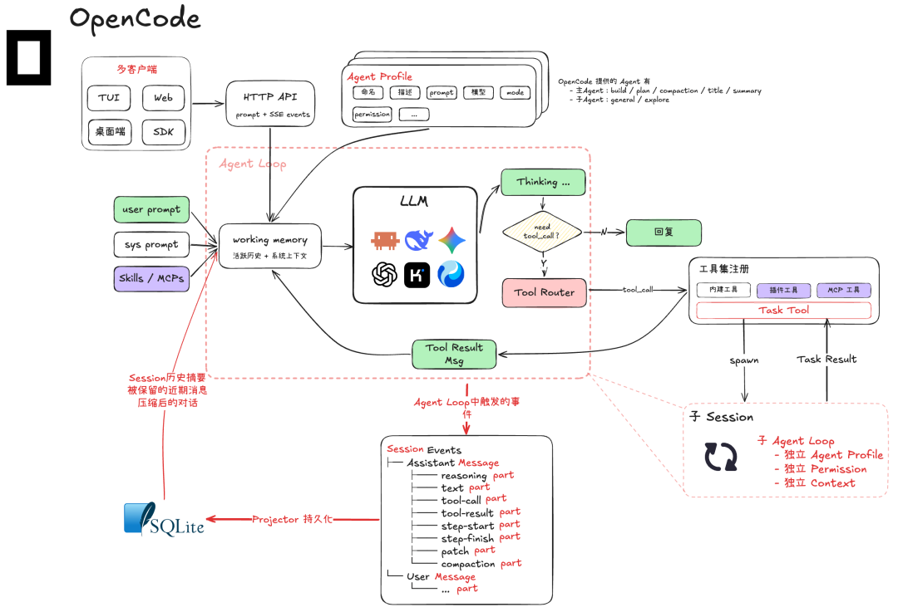
Agent Profile：同一个循环装载不同身份
Profile 不是一段换皮 Prompt。它同时保存名称、描述、Prompt、模型、Mode、Permission、生成参数与最大步数，决定 Agent 能看到什么、能调用什么工具、何时需要向用户申请许可。
Build 与 Plan 以 primary 模式直接承担用户任务，二者最明显的差别落在权限边界上。General 与 Explore 以 subagent 模式被 Task Tool 调度，Explore 只开放搜索、读取与受限命令等探索能力。Compaction、Title、Summary 标记为隐藏 Agent，分别负责压缩上下文、生成标题和汇总变更。前台角色与后台服务由同一种 Profile 机制表达。
Codex：安全执行和 Thread 生命周期
在 Codex 里，用户点下允许，并不等于模型拿到了整台电脑。Approval 只决定某个动作是否获准，Sandbox Policy 仍然约束命令可以写到哪里、能否访问网络、可以触碰哪些系统资源。一次会触碰系统的工具调用真正执行之前，要连续穿过这两道边界。
为什么需要两层？Q&A Bot 的错误只结束在屏幕上，但Coding Agent 的错误可能变成被覆盖的文件、错误执行的命令，或者一次越过工作区边界的访问。模型能力越强，运行时越不能只靠 Prompt 提醒它小心。Codex 真正要解决的，是怎样让一个并不完全可靠的模型，安全、连续、可恢复地操作真实计算机。
这套工程并不便宜。独立测评项目 OpenBench 在 2026 年 7 月把同一个 gpt-5.6-sol 放进 7 套 Coding Agent Harness，并只比较各组都完整跑过的 42 个任务。Codex 完成了 31 个，通过率 73.8%；它的中位耗时是 94.6 秒，每个成功任务平均消耗 117,107 个新 token，都是这组测试里最重的一档。
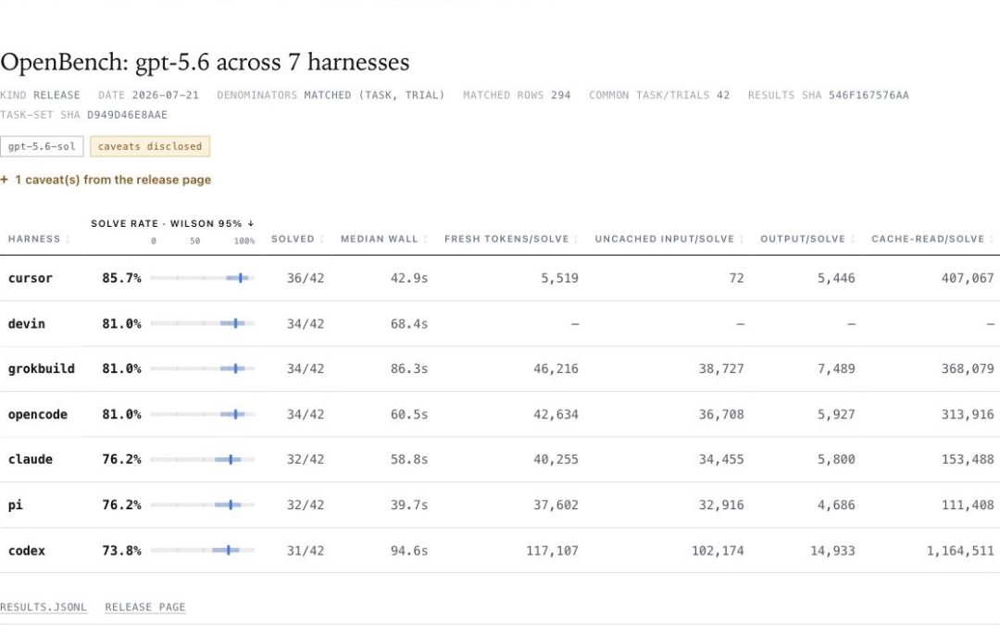
这张表不是通用排行榜，任务只有 42 个，不同长度、不同环境的任务也可能改变结果。但它确实把 Codex 的 Harness 成本展现了出来。如果测试只关心一次短任务能不能做完，线程生命周期、审批、沙箱、事件、持久化与恢复机制，很多时候都只会被算成额外开销。Codex 选择的不是最轻的路，而是让长任务真正可以被监督、中断、恢复和并行管理的路。
2025 年，开源的 Codex CLI 与云端 Codex 相继出现，使用入口随后扩展到 IDE、Web、App 和 SDK。入口越来越多只是表面变化，更深的一层是任务不能再依附某个终端进程。App Server 提供统一协议，让不同客户端面对同一套任务生命周期、审批请求和流式事件。
这套协议的骨架是 Thread、Turn 与 Item。Thread 承载一个可以持续多轮的任务，Turn 表示用户推动任务向前走的一次过程，Item 则把模型消息、Reasoning、命令执行、文件修改、工具调用和审批拆成可观察单元。任务可以 Start、Resume、Fork、Interrupt，正在运行的 Turn 也可以被 Steer。Codex 保存的不只是聊天记录，而是一棵能够继续生长的任务状态。
把这套生命周期真正运转起来的，是 Thread Manager。它维护一张以 Thread ID 为索引的活跃任务表，让 App Server 能找到已经在跑的任务，继续投递 Turn 与操作。如果任务已经离开内存，Thread Manager 才会从 Thread Store 或 Rollout 装回历史，重建一个可运行的 CodexThread。它不是另一层记忆库，也不亲自完成模型推理，更像一个把协议请求、运行实例和持久化历史接在一起的任务控制平面。
Thread 负责长期生命周期，每次模型采样还需要一个更短暂、更严格的执行现场。源码中的 StepContext 会引用当前 TurnContext，并捕获这一刻选中的环境、Capability Roots、MCP Binding、Tool Router 与 AGENTS.md。后台配置即使发生变化，已经开始的这一步仍然面对一套自洽的工具和环境。
当模型准备制造真实副作用时，Approval Policy 与 Sandbox 开始接管。前者判断什么情况下必须停下来询问用户，App Server 会把请求绑定到具体的 Thread、Turn 和 Item；后者把允许写入的目录、网络访问和操作系统能力落实为技术限制。用户接受一次命令，并不会自动取消剩余限制。这里的安全不是模型答应会谨慎，而是执行路径中存在模型无法自行跨过的边界。
Codex 对过去也分了不同层次。当前模型看到的是经过装配和压缩的上下文，Rollout 与 Thread Store 保存的是可以恢复的任务轨迹，SQLite 为 Thread 状态和元数据提供查询入口。启用 Memory 后，后台管线还会读取历史 Rollout，先提取每个 Thread 中稳定的事实和经验，再交给专门的整合 Agent 更新 ~/.codex/memories/。恢复一次任务与从许多任务中学习，在这里是两条不同的管线。
Multi-agent 继续沿用同一套抽象。子 Agent 不是塞进主循环的一段特殊逻辑，而是由 Thread Manager 派生出的子 Thread。它可以从父任务已经持久化的历史 fork，拥有自己的上下文、工具运行时和 Rollout，再把状态与结果送回父任务。
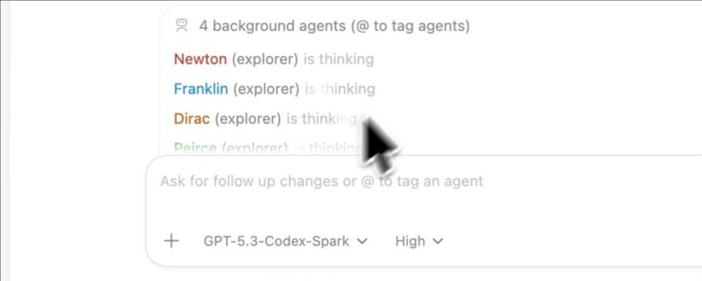
这个抽象现在已经直接长到了产品界面上。图中，同一个主任务派生了 Newton、Franklin、Dirac 和 Peirce 4 个后台 Agent，用户还可以用 @ 继续向某个 Agent 追加请求。看上去有点像一个 Agent 群聊，但它们并不是 4 段推理挤在同一份上下文里，而是 4 个由 Thread Manager 维护的独立子 Thread。
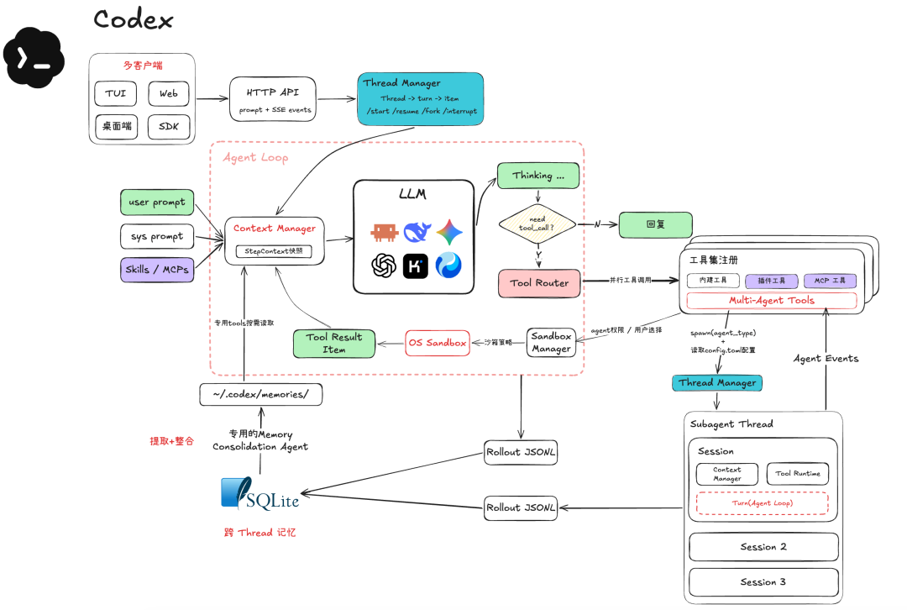
Thread Manager：把协议请求接到运行实例
App Server 暴露的是 thread/start、thread/resume、thread/fork 与 turn/start 这些协议操作，真正把它们接到内部运行时的是 Thread Manager。它用一个内存中的 HashMap<ThreadId, Arc<CodexThread>> 记录活跃 Thread，再通过 Thread ID 查找实例、投递操作，并让 App Server 继续读取对应的运行事件。结束的 Thread 会从表中移除，没有完成关闭的实例则保留下来，便于重试或继续检查。
启动新任务时，Thread Manager 会先根据配置、初始历史、环境与工具能力创建 Session。它等到第一个 SessionConfigured 事件后，才把 Session 包装成 CodexThread 并注册到活跃表。如果 Resume 指向一个仍在运行的 Thread，它会直接返回现有实例，避免同一份历史启动两套 Agent Loop。只有冷 Thread 才需要从 Thread Store 或 Rollout 读取历史，再重建新的运行实例。
被管理的任务状态仍然遵循 Thread、Turn 与 Item 三层结构。Thread 是长期容器，Turn 是用户推动任务的一次过程，Item 则把用户输入、Agent Message、Reasoning、命令执行、文件变更、工具调用和审批拆成可观察单元。
Thread
└── Turn
├── User Input Item
├── Reasoning / Agent Message Item
├── Command Execution / File Change Item
├── Tool Call / Approval Item
└── Turn CompletedFork 也不是复制几段聊天文字。Thread Manager 会按指定的持久化快照裁切历史，生成新的 Thread ID 与独立运行实例。派生子 Agent 时，它还会先要求父 Thread 物化并刷新尚未落盘的 Rollout，再从稳定快照创建子 Thread。所以 Thread Manager 管的不只是一列会话，还有任务之间的谱系与运行边界。
turn/start 与 turn/steer 会把新操作送给正确的 CodexThread，运行过程再通过 item/started、增量事件、item/completed 和 turn/completed 向外暴露。Thread Manager 本身不执行每一步推理，它负责保证每个协议请求都落到正确的任务、正确的历史和唯一的运行实例上。
Hermes：自进化
Pi 关心的是如何用尽量少的 Harness tax 完成眼前这次任务，Hermes 把问题往后推了一步，Agent 第二次遇到类似任务时，能不能少走一遍弯路？这需要 Harness 不只保存聊天记录，还要判断一次经历里哪些是稳定事实，哪些是可复用流程，哪些旧知识又应该被新的修正覆盖。
到 2026 年 8 月，这个问题有了一套专门的测试。PAST-Bench 不再把每个任务当成彼此隔离的一次考试，而是安排了 26 个场景、204 个跨会话 Episode。早期 Episode 给 Agent 留下偏好、流程或修正，后续 Episode 清空当前上下文，再分别测试 Memory、Procedural Reuse、Information Gathering 和 Update。每组实验还会关掉持久化能力重跑一次，尽量把模型本身的能力与历史经验带来的增益拆开。
固定 MiniMax-M2.7 后，Hermes 是现有基线里唯一在四类能力上全部获得正向增益的框架。开启持久化后，它的总体增益是 +0.13。更有意思的是，PAST-Bench 还检查了日志中的 Memory 写入、Skill 创建、Session Search 和后续读取，确认 Agent 是否真的走完了「写入、检索、正确应用」这条路径。Hermes 的机制证据分是 0.64，同样取得 +0.13 增益的 nanobot 只有 0.57。
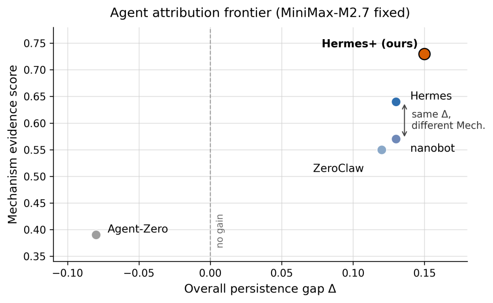
再回头看 Hermes Agent 的架构，前台 Agent Loop 解决当前任务，Session Archive 留下原始经历，Memory 和 Skills 分别承载稳定事实与可复用流程，Background Review 再决定哪些经验值得影响未来。Hermes 所说的自我改进，是在模型外部维护一层会随使用逐渐变化的认知系统。
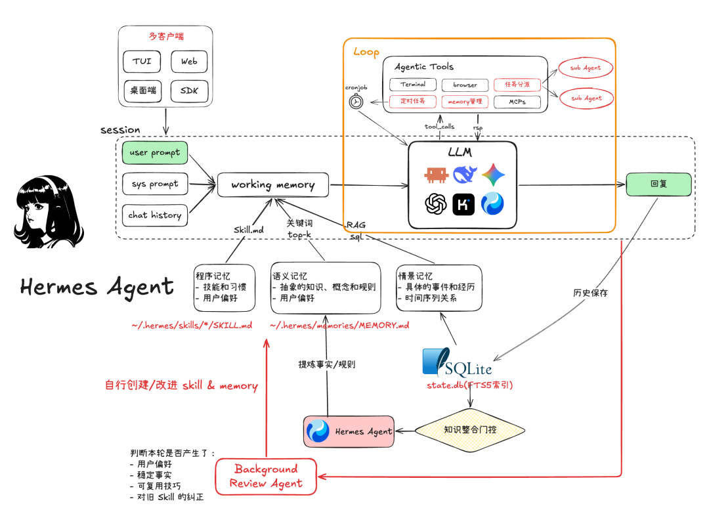
Persistent Runtime：任务可以由时间而非用户触发
Terminal、Browser、MCP、任务分派和 Skill 管理构成 Agentic Tools；Cronjob 让 Harness 能够在没有即时用户输入时触发工作。Agent 因而从“打开终端才存在的进程”变成一个长期在线的个人运行时。
总结
回到开头，今天的 Agent 看起来像一套小型操作系统，并不是因为有人一开始就想造一套小型操作系统。每一层都是模型撞上边界以后，工程系统不得不补上的回答。记不住，就装配上下文；碰不到世界，就接入工具；一步做不完，就启动循环；历史装不下，就分出长期记忆；真实副作用越来越多，就继续长出会话、权限、沙箱、事件和子 Agent。
Agent 做决策，Harness 让这些决策可以持续、可控、可恢复地发生。模型决定下一步行动，Harness 管理它看见什么、能够调用什么、动作在哪里执行、过程怎样留下记录，以及失败之后如何重新开始。
Pi、OpenCode、Codex 和 Hermes 并没有给出同一道题的标准答案。Pi 把核心收得尽可能小，OpenCode 把身份与历史组织成 Profile 和 Event，Codex 围绕 Thread 与安全边界完成工程化，Hermes 则把注意力延伸到下一次任务。不同路线交换的是成本、控制力、可恢复性和长期学习能力，选择哪一种，取决于 Agent 最终要进入怎样的真实环境。
模型还会继续变强，但 Harness 不会因此消失。模型越能行动，外面的运行时越不能含糊。未来的分水岭，未必只是谁的模型更聪明，也是谁能为同一个模型搭出更好的上下文、更稳的循环、更清晰的边界，以及一套不会在长期使用中越学越乱的记忆。
Agent 是怎样长出 Harness 的，答案就在这些一层层补上的边界里。


归属：[[02-输入/按主题/AI与效率/_index|AI与效率]]